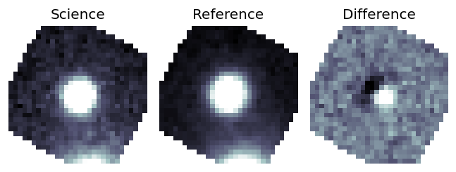
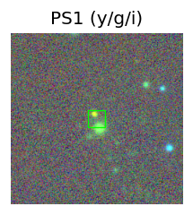
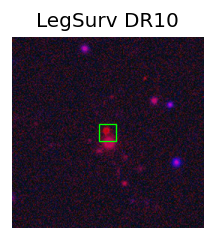
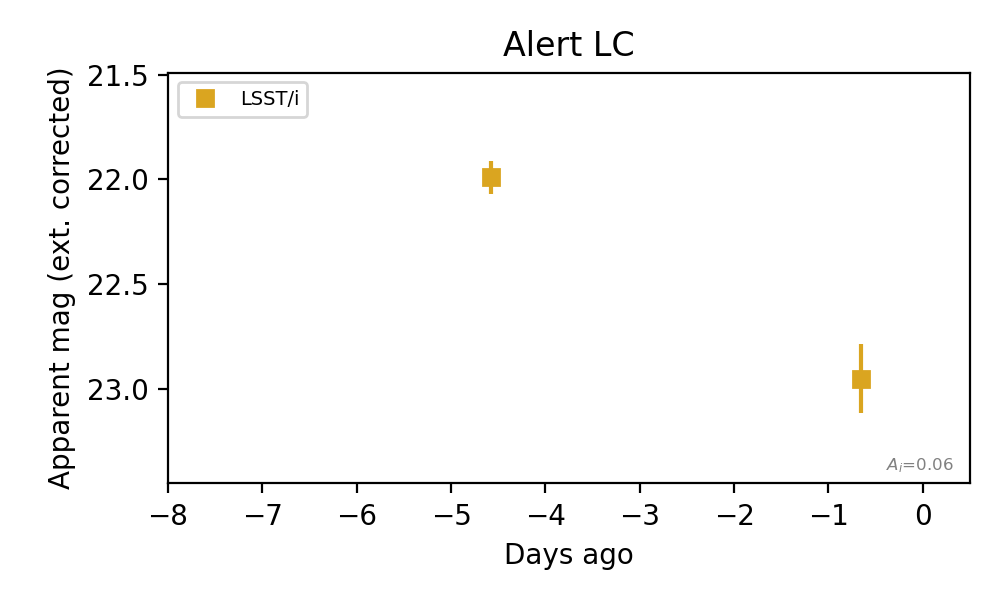
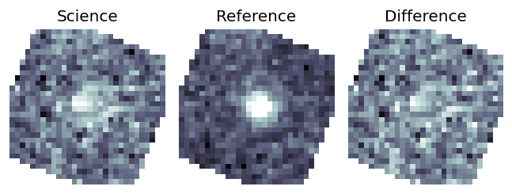
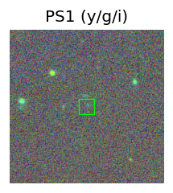
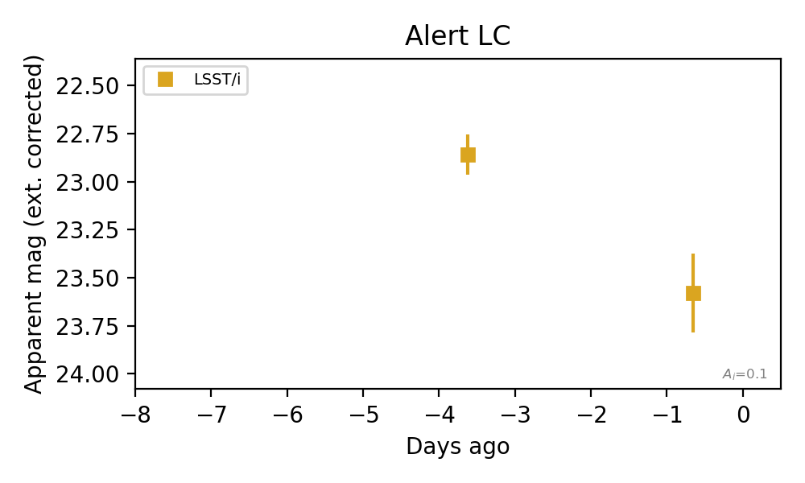

Candidate List 20261115Last night — ZTF: 0 passed basic cuts (0 young) · LSST: 5,189 passed basic cuts (540 young)Previous Day Next Day
Section 1: New Sources (age<1d) Section 2: Old (1-5d) sources observed last night Section 3: Already classified as a supernova on TNSplaceholder
Section 1: New Afterglow/FBOT Cands Last Night (0)
Section 2: Older Sources Observed Last Night (2)
1. [LSST] 170653062537412786 (Afterglow?) [Back to Top] [Fritz Alert] [Fritz Source] [Lasair]RA, Dec: 335.52129, -18.07172 22h22m5.11s, -18d-4m-18.20sGalactic (l, b): 39.71413, -54.50291 ext(g-r) = 0.037


TESS: Sectors [ 28 42 92 116]
PS1: 0 sources in 3 arcsec
LegacySurvey: 0 sources in 3 arcsec

Rise Rate:
Fade Rate:
i: 0.25 mag/day
2. [LSST] 171141186249556009 (Afterglow?) [Back to Top] [Fritz Alert] [Fritz Source] [Lasair]RA, Dec: 345.40575, -5.19534 23h 1m37.38s, -5d-11m-43.23sGalactic (l, b): 68.00624, -55.87404 WARNING: 0.96 deg from ecliptic plane ext(g-r) = 0.063

TESS: Sectors [42 70 92]
PS1: 0 sources in 3 arcsec
LegacySurvey: 1 sources in 3 arcsec Closest: d = 0.02 arcsec, 246.3 deg (east of north) photoz=1.05 (68% bounds 0.5, 1.53), type=REX peak abs mag (ext. corrected) = -21.42 (68% bounds -19.46, -22.44)

Rise Rate:
Fade Rate:
i: 0.24 mag/day
Section 3: Already classified as a supernova on TNS (0)